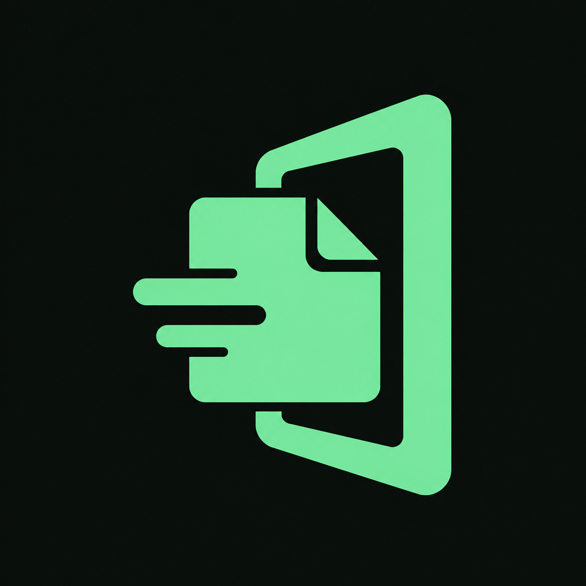
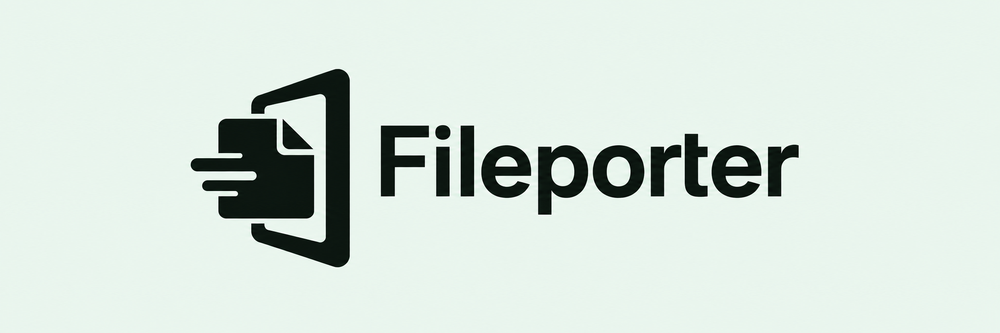
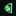
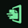

Private, direct file transfer between your devices. A folded file and an open portal make a compact, recognizable identity.
Asset inventory and usage notes →


Text-free artwork with an opaque background. Rounded corners below are preview masks; the exported PNGs retain square corners.


#74E6A0
#0A100D
#EAF6EF
Use mint against forest. On light backgrounds use the dark logo. Palette values are design tokens; generated images have slight pixel variation.
IBM Plex Sans
Regular for body copy, medium for controls, semibold for headings. Reserve IBM Plex Mono for file names and machine data. Speak plainly: “Send files”, “Choose a device”, “Transfer complete”.
Preserve proportions and the supplied icon padding. Give the logo clear space equal to its folded corner. Use a horizontal logo at 240px or wider; below that, use the icon. Never stretch, mirror, add text to the icon, or add glow.